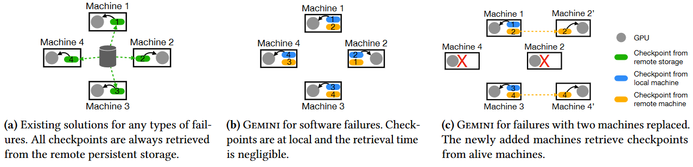
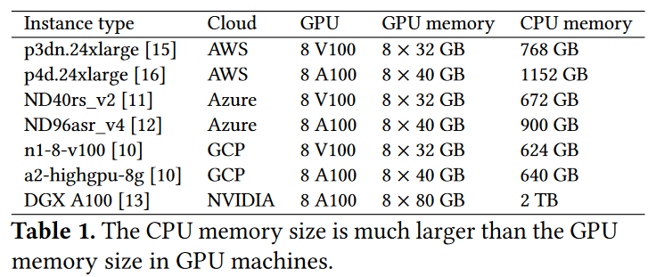
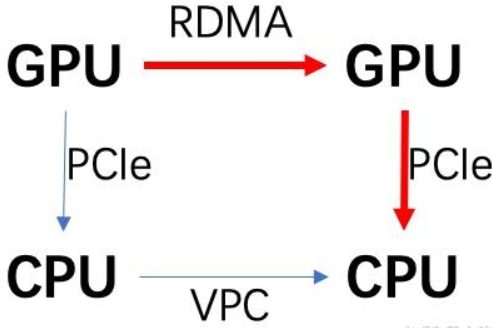
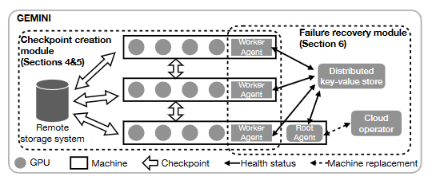
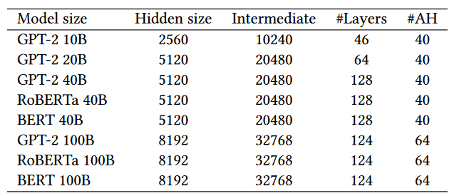

Gemini
1. Overview¶

-
Existing solutions have significant failure recovery costs due to the severe restriction imposed by the bandwidth of remote storage (（FSx in AWS、CFS in Tencent、VeFPS in ByteDance、NAS in Alibaba)in which they store checkpoints.
-
This paper presents Gemini, a distributed training system that enables fast failure recovery for large model training by checkpointing to CPU memory of the host machines with much larger aggregated bandwidth.
Challenges:
How to maximize the probability of failure recovery from checkpoints stored in CPU memory?
How to minimize the interference of checkpoint traffic with model training?
2. Background¶
2.1 Frequent failures in model training¶
-
OPT model training reports: training OPT-175B used 992 NVIDIA A100 GPUs, and the training process encountered around 110 failures over a period of two months1
-
Facebook AI's analysis of the production cluster shows that checkpoint-related overheads in full recovery can consume an average of 12% of the total training time. For the worst 5%, training time slowdown can be up to 43%. This 12% overhead can add up to a significant computational cost at scale.2
2.2 Wasted time for failure recovery¶
the average wasted time (denoted as \(T_{wasted}\)) can be expressed as:
In addition, we have the following constraint:
2.3 Limitations of Existing Solutions¶
To reduce the wasted time, it is critical to reduce checkpoint time \(t_{c k p t}\) to enable a higher checkpoint frequency \(f\), and the optimal frequency \(f\) is every iteration \(1 / T_{\text {iter }}\).
It is infeasible to arbitrarily increase the checkpoint frequency because checkpoint frequency is bottlenecked by the bandwidth of the remote persistent storage.
MT-NLG
42 minutes to checkpoint the model states of MT-NLG(530B) to the remote persistent storage when the bandwidth is 20Gbps(AWs FSx). The average wasted time for failure recovery is 42 + 21 + 42 = 105 minutes, which makes the training system less efficient.
Why 42 minutes?
related work
-
DeepFreeze(CCGRID'20) performs asynchronous checkpointing but stores checkpoints in remote persistent storage.
-
Checkfreq(FAST'21): Fdynamically adjusts the checkpointing frequenc.
-
Check-N-Run(NSDI'22): compresses checkpoints with lossy schemes to reduce required storage, but this may harm model accuracy and incur compression overheads.
2.4 Opportunity¶
- We observe that the CPU memory in GPU machines is sufficient to store a few checkpoints.

- Because the network connecting GPU instances is optimized for training, its bandwidth is much higher than the bandwidth of the remote persistent storage.

3. Designs¶
3.1 Checkpoint Placement¶
Given N machines and m checkpoint replicas, what is the optimal placement strategy to distribute the m replicas among the N machines to maximize the probability of failure recovery from CPU memory?
Mixed placement strategy
-
When N is divisible by m, the mixed placement strategy (equals group placement strategy) is the optimal placement strategy.
-
When N is not divisible by m, the mixed placement strategy minimizes the checkpoint communication time. Its failure recovery probability from CPU memory is near-optimal and the gap is bounded by \((2 m-3) /\left(\begin{array}{l}N \\ m\end{array}\right)\).
Corollary
When \(N\) is divisible by \(m\) and \(k\) machines are disconnected simultaneously, the probability that GEMINI can recover failures from CPU memory is
Note
Even for a thousand-scale training cluster, the possibility of two instances having failures at the same time is very limited. Therefore, Gemini with 𝑚 = 2 can recover failures from CPU memory for most cases.
3.2 Traffic Interleaving¶
target
Difficulties and Approaches
eval
Note
It is still possible that the total time required for checkpointing cannot be fit in the available network idle timespans, Although checkpoint communications hinder the update operation and prolong the iteration time in this case, Gemini can reduce the checkpoint frequency to amortize the incurred overhead.
-
Gemini adopts online profiling for the first several iterations of training, e.g., 20 iterations in our implementation
-
We observed that the profiled timeline remains almost constant across iterations, The normalized standard deviation of the measurements is less than 10%.
3.3 System Architecture¶

details
-
Worker agent monitor their own machine’s health status and update it in the distributed key-value store.
-
The root agent periodically checks the health status of each training machine from the distributed key-value store
-
Worker agents also periodically check the root machine’s health status in the distributed key-value store. In the case of a root machine failure, one alive worker machine is promoted as the root machine, and one new worker machine is initialized to replace the failed one.
-
When a training machine replacement is needed, the root agent interacts with the cloud operator to complete the machine replacement and guides the replaced machine where to retrieve its checkpoints
-
It leverages CPU memory to store checkpoints for failure recovery, and meanwhile stores checkpoints for other purposes in remote persistent storage.
-
Will fall back to using the low-frequency checkpoints stored in the remote persistent storage for failure recovery.
4. Evaluation¶
setup.
-
16 p4d.24xlarge instances for evaluations. Each instance has 1152GB CPU memory and it has 8 NVIDIA A100 (40GB) GPUs
-
p4d.24xlarge instances are connected through a 400Gbps elastic fabric adaptor (EFA) network
-
We adopt FSx as the remote persistent storage and the aggregated bandwidth is 20Gbps
- workload:

- Use deepspeed ZeRO-3 setting; optimizer is Adam
Baselines.
-
Strawman: checkpoints model states every three hours3, to the remote persistent storage
-
HighFreq: As frequently as possible, to the remote persistent storage
4.1 Training time¶
Carried out 50 training iterations with Gemini
Gemini does not affect the training iteration times
there is still available network idle time even after Gemini inserts all the checkpoint traffic
4.2 Wasted time¶
training of GPT-2 100B
16 p4d.24xlarge instances with different numbers of replaced instances
-
software failures: 1.5× the iteration time
-
hardware failures: more than 13× compared to HighFreq
- Gemini’s checkpoint time reduces with an increase in the number of instances in our testbed because it utilizes the aggregated network bandwidth among GPU machines to write checkpoints to the CPU memory.
Why?
- with 16 p4d.24xlarge instances, the reduction is 65× with a 100Gbps network, and it increases to more than 250× with a 400Gbps network.
-
Gemini improves the checkpoint frequency over HighFreq by 8× and over Strawman by more than 170×
-
the checkpoint frequency of Gemini is bounded by the iteration time and it can achieve an even higher frequency with the computation advancement of accelerators.
创建日期: 2023-11-03